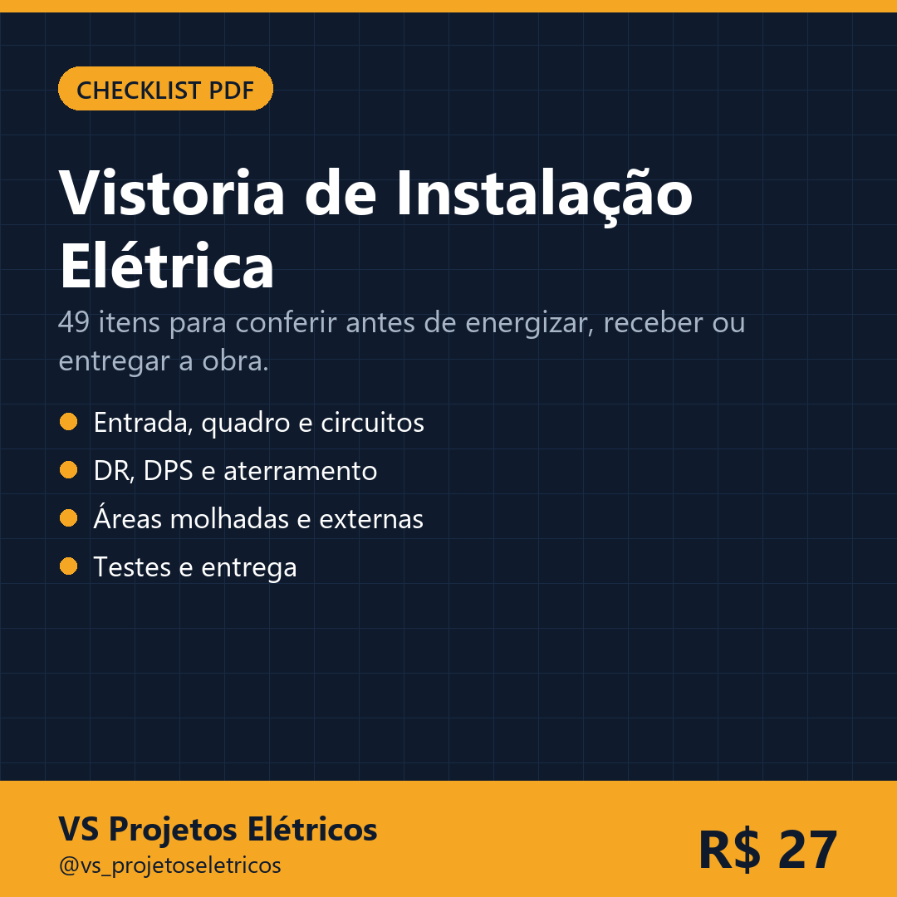

Um roteiro de campo para não esquecer DR, DPS, aterramento, identificação de circuitos e os testes de entrega. Imprima e leve para a obra.
Quero comprar agora
Não. É um roteiro prático de conferência. O projeto e a NBR 5410 vigente continuam sendo a referência.
Sim, imprima quantas vezes quiser para uso próprio.
Logo após o pagamento, por e-mail e na área do cliente.
7 dias de garantia incondicional pela plataforma.